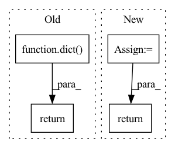

Pattern ID :192

Before Change
bx_o = [b[o] for b, o in zip(boxes, bo)]
indices = self.matcher(bx_h, bx_o, objects, prior, logits, targets)
return dict(
interaction_loss=self.interaction_loss(bx_h, bx_o, indices, prior, logits, targets)
)
def box_cxcywh_to_xyxy(x):
x_c, y_c, w, h = x.unbind(-1)
b = [(x_c - 0.5 * w), (y_c - 0.5 * h),
After Change
indices = self.matcher(bx_h_post, bx_o_post, objects, prior, logits, targets)
loss_dict = {"focal_loss": self.interaction_loss(n, indices, prior, logits, targets)}
loss_dict.update(self.regression_loss(
bx_h, bx_o, bx_h_post, bx_o_post, indices, targets, bbox_deltas.split(n)
))
return loss_dict
def box_cxcywh_to_xyxy(x):
x_c, y_c, w, h = x.unbind(-1)
In pattern: SUPERPATTERN
Frequency: 3
Non-data size: 4
Instances
Fragment ID: 835884
Project Name: fredzzhang/upt
Commit Name: def79003d35c81f7efcbcdb738042ec18038995d
Time: 2021-10-28
Author: frederic.zhang@anu.edu.au
File Name: ops.py
M Class Name: SetCriterion
N Class Name: SetCriterion
M Method Name: forward(9)
N Method Name: forward(8)
M Parent Class: nn.Module
N Parent Class: nn.Module
M File Name: ops.py
N File Name: ops.py
M Start Line: 277
M End Line: 283
N Start Line: 305
N End Line: 322
'>
Before Change
constant_init(m, 1)
def forward(self, x, target=None):
losses = dict()
if target is None:
return losses
x = self.conv(x)
x = self.avg_pool(x).squeeze(-1).squeeze(-1).squeeze(-1)
x = self.dropout(x)
x = self.fc(x)
if target.shape == torch.Size([]):
target = target.unsqueeze(0)
losses["loss_aux"] = self.loss_weight * self.loss_cls(x, target)
return losses
class TemporalModulation(nn.Module):
After Change
x = self.dropout(x)
x = self.fc(x)
return x
class TemporalModulation(nn.Module):
'>
Fragment ID: 835886
Project Name: open-mmlab/mmaction2
Commit Name: 40bdbbf0a0bf03591a20af6e3f52b29812a76af3
Time: 2022-08-03
Author: daiwenxun@pjlab.org.cn
File Name: mmaction/models/necks/tpn.py
M Class Name: AuxHead
N Class Name: AuxHead
M Method Name: forward(2)
N Method Name: forward(3)
M Parent Class: nn.Module
N Parent Class: nn.Module
M File Name: mmaction/models/necks/tpn.py
N File Name: mmaction/models/necks/tpn.py
M Start Line: 244
M End Line: 257
N Start Line: 264
N End Line: 271
'>
Before Change
z = x
// self.ss = torch.cat((s_i.view(1, -1), s_o.view(1, -1), gamma * Dk_i.view(1, -1), gamma * Dk_o.view(1, -1)), dim=0)
return dict(z=z, h=h)
def compute_loss(self, output_dict, y):
pred = output_dict["pred"]
After Change
def forward(self, x, adj, adj_knn=None):
if adj_knn is None:
adj_knn = self._adj_knn
else:
self._adj_knn = adj_knn
gamma = self.gamma
h = None
for ix, (layer, act) in enumerate(zip(self.layers, self.act_layers)):
s = torch.sigmoid(x @ self.scores[ix] + self.bias[ix])
Dk = x @ self.D_k[ix] + self.D_bias[ix]
x = s * act(layer(x, adj)) + (1 - s) * act(layer(x, adj_knn)) + gamma * Dk * act(layer(x))
if ix < len(self.layers) - 1:
x = self.dropout(x)
if ix == len(self.layers) - 2:
h = x.clone()
z = x
// self.ss = torch.cat((s_i.view(1, -1), s_o.view(1, -1), gamma * Dk_i.view(1, -1), gamma * Dk_o.view(1, -1)), dim=0)
if self.training:
return z, h
else:
return z
'>
Fragment ID: 835882
Project Name: edisonleeeee/graphgallery
Commit Name: 28c649de2e2d908e2156a283c79e0ef288f28152
Time: 2021-11-18
Author: cnljt@outlook.com
File Name: graphgallery/nn/models/pytorch/simpgcn.py
M Class Name: SimPGCN
N Class Name: SimPGCN
M Method Name: forward(4)
N Method Name: forward(4)
M Parent Class: nn.Module
N Parent Class: nn.Module
M File Name: graphgallery/nn/models/pytorch/simpgcn.py
N File Name: graphgallery/nn/models/pytorch/simpgcn.py
M Start Line: 88
M End Line: 105
N Start Line: 76
N End Line: 102